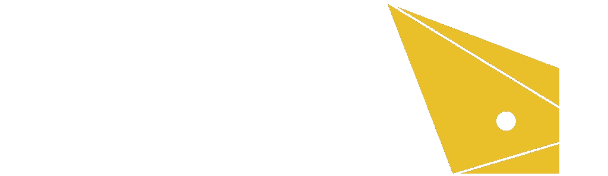

01 · Capture
Multispectral capture
Standardized hyperspectral capture and calibration — a repeatable way to collect real-world task data.

HelioSense builds AI-native vision sensors — moving machines from general-purpose RGB to task-specific spectral sensing, powered by real-world multispectral data.
HelioSense started at HKUST and incorporated in 2025, with research in Hong Kong and a Shanghai R&D center. The company designs next-generation visual input for physical AI — so robots and industrial systems see the spectral information RGB throws away.
RGB compresses a continuous spectrum into three values made for human vision. A green leaf and green-painted metal can look identical in RGB — and completely different in the near-infrared. HelioSense builds sensors that keep the bands a task actually needs.
A complete suite for spectral vision: collect the scene, find the useful bands, then turn those recipes into perovskite devices and deployable modules.
Standardized hyperspectral capture and calibration — a repeatable way to collect real-world task data.
Material ground truth, RGB baselines, and task labels so application data can be compared and reused.
AI compares full-spectrum and candidate bands to derive task-specific spectral recipes — not more colors for their own sake.
Custom vision sensors, modules, and edge solutions whose response is tuned to the recipe the task needs.
Application data should define the chip — and the chip should keep feeding better inputs back to the model. Today that loop is missing: software knows the task, but sensor design stays generic.
Full-spectrum capture and models find which bands matter for a job — inspection, sorting, manipulation, crop health, or night-time sensing.
Perovskite devices turn those bands into manufacturable sensors, so machines get task-relevant light instead of a human RGB approximation.
See what RGB misses in industrial scenes — including ultraviolet cues that ordinary cameras cannot use.
Tell same-color materials apart, find hidden residues, and give physical-AI systems a more honest picture of the scene.
Read plant condition beyond visible color, and keep facial and scene features usable when visible light fails.
Founded by HKUST researchers and operators from semiconductors, cameras, and automotive. Science sets the material; engineering turns it into an imaging device.
Ph.D. and postdoctoral researcher at HKUST; B.Sc. in Chemistry from Nanjing University. Nearly a decade in micro/nano optoelectronics and bio-inspired devices, with work published in venues including Science Robotics and Science Advances.
Chair Professor at HKUST and Director of the State Key Laboratory of Displays and Opto-Electronics. Fellow of the Hong Kong Academy of Engineering, the Royal Society of Chemistry, and Optica. Bridges materials, process, and device architecture.
Perovskites and optoelectronic devices. Ph.D. in Electronics, HKUST. Publications include Nature and Device.
Device processes and product engineering. M.Sc. in Optoelectronics, Imperial College London. Former Xiaomi camera hardware engineer.
Device architecture and hardware–AI co-design. Ph.D. in Electrical Engineering, University of Illinois Urbana-Champaign.
Production transfer and equipment. About two decades in semiconductors and displays, including SMIC and Tianma.
Operations and organizational coordination. Master’s from SIMIT, Chinese Academy of Sciences. Previously at Changan Automobile.
HelioSense is part of the AGI Villa community. For introductions, partnerships, or collaboration, reach the Villa team.